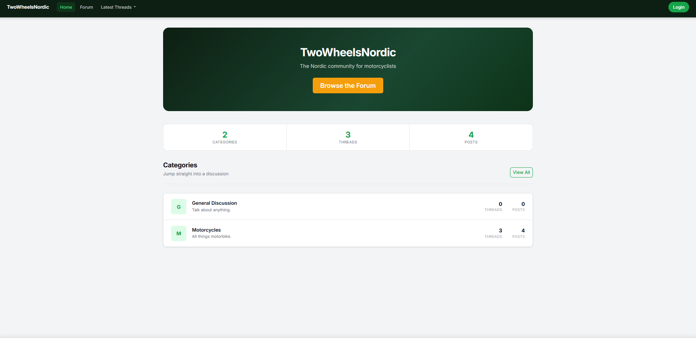
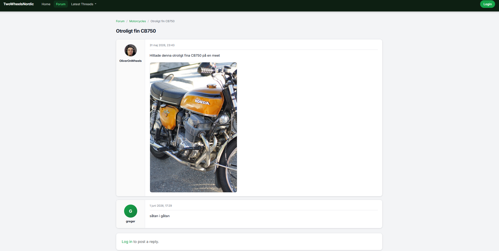
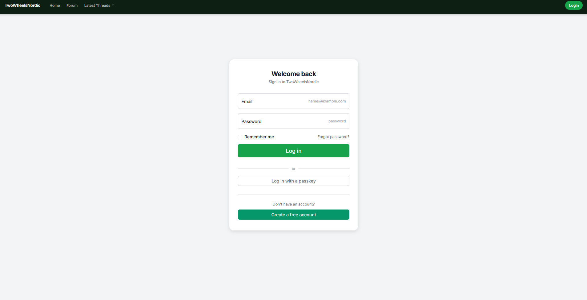
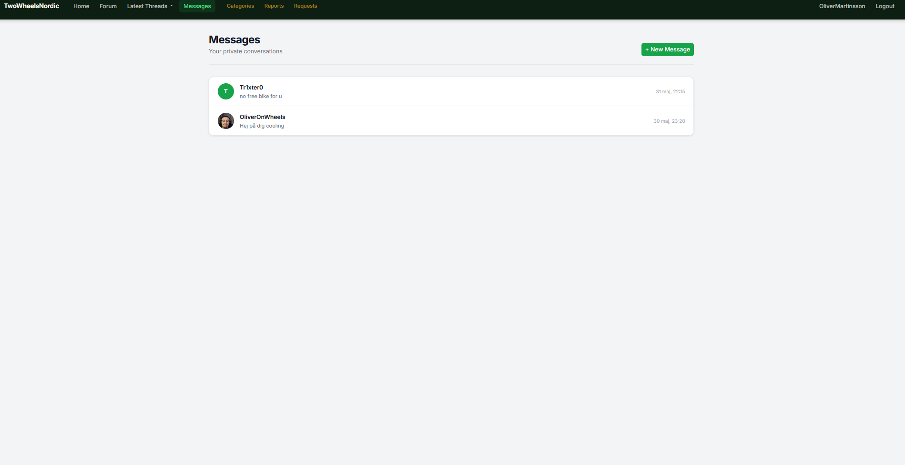

About TwoWheelsNordic TwoWheelsNordic is the online home for motorcyclists across the Nordic region — a place where riders of all kinds come together to share experiences, swap advice, and talk about everything on two wheels. Whether you're a seasoned road warrior, a weekend trail rider, or just getting your license, this is your community. From gear recommendations and route tips to bike builds and general banter, TwoWheelsNordic is where Nordic riders connect. Join the forum, start a thread, and be part of a growing community built by riders, for riders.




TwoWheelsNordic is the online home for motorcyclists across the Nordic region — a place where riders of all kinds come together to share experiences, swap advice, and talk about everything on two wheels. Whether you're a seasoned road warrior, a weekend trail rider, or just getting your license, this is your community. From gear recommendations and route tips to bike builds and general banter,
HttpClient and graceful error handling
Implemented as a pure HTML + JavaScript component in the Blazor host page, decoupled from any render mode or framework lifecycle. It reads LocalStorage on load to decide visibility and writes the user's acknowledgement back on click, with a linked /privacy page describing the essential cookies in use. No database or API calls — fully client-side and GDPR-appropriate for a site using only strictly-necessary cookies.
This project taught me how to structure a full-stack Blazor WebAssembly app using Onion architecture, where the browser client consumes my own REST API and every layer is wired together with dependency injection. I learned to integrate external services — uploading images to Supabase Storage and connecting Entity Framework Core to a hosted PostgreSQL database. The most valuable challenge was deployment: diagnosing real-world production issues like runtime mismatches, asset integrity caching, and Debug-only artifacts breaking the WebAssembly startup taught me far more than the happy path ever could.